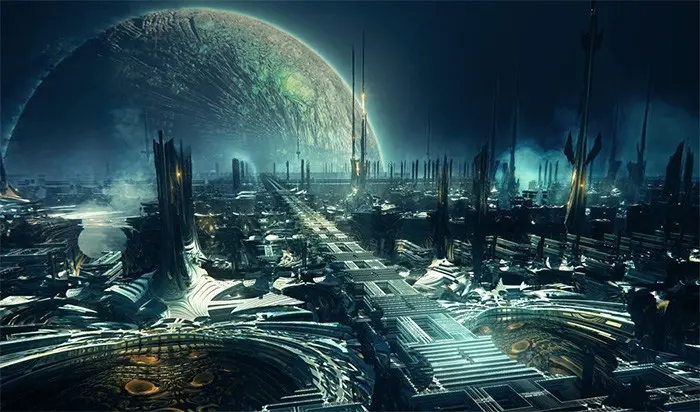
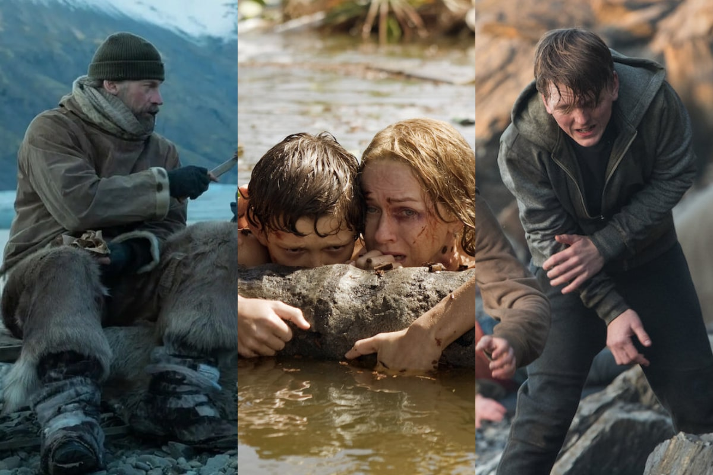

Géneros Más Leídos
La ficción es un género literario que incluye historias inventadas o imaginativas. Se
caracteriza por su narrativa creativa y puede abarcar subgéneros como la ciencia ficción, la
fantasía, y más.
La no ficción es un género que se basa en hechos reales. Incluye biografías, ensayos, y
reportajes, y busca informar o educar al lector sobre un tema específico.
La fantasía es un género que utiliza elementos mágicos y sobrenaturales como parte de su
narrativa. A menudo presenta mundos imaginarios y criaturas fantásticas.

